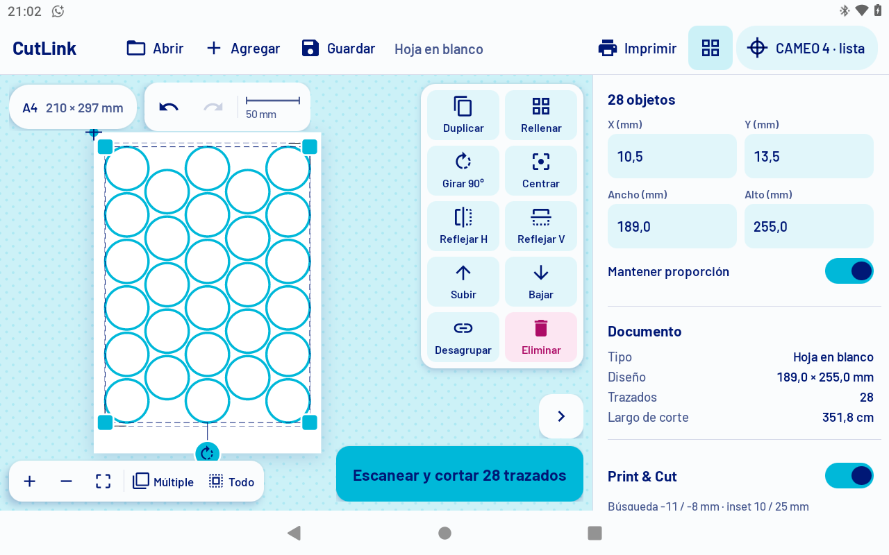
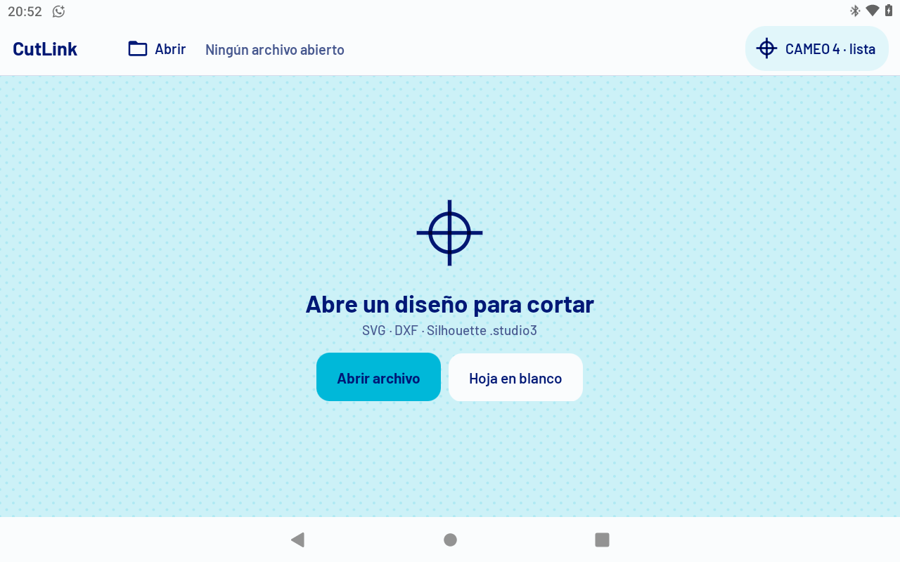
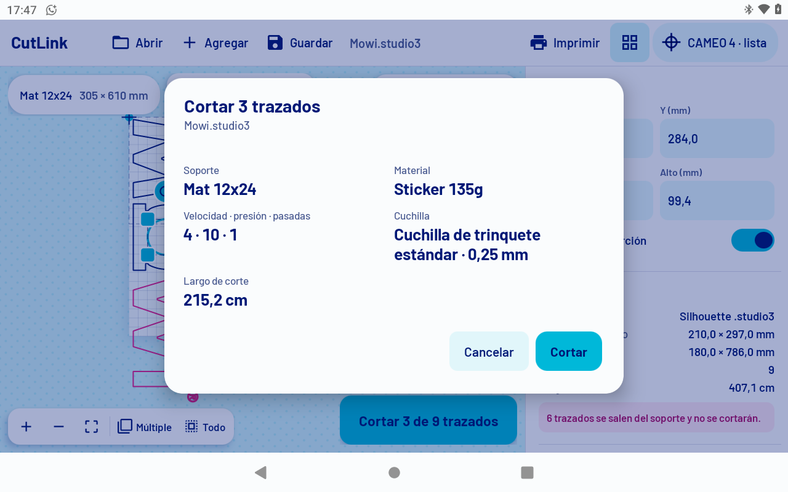
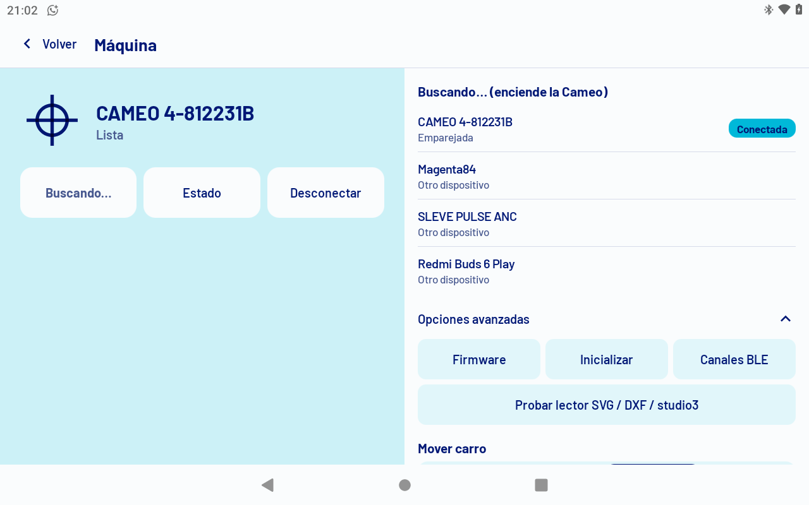

Imprime y corta sin Studio.
CutLink maneja tu Silhouette CAMEO 4 desde una tablet Android, por Bluetooth. Sin PC al lado de la máquina.

Lo de todos los días, en una tablet.

Abre lo que ya tienes
SVG de Illustrator, DXF y archivos .studio3 de Silhouette Studio, desde Archivos, Drive o «Abrir con» en WhatsApp.
Si un .studio3 trae imágenes pesadas, te pregunta: para cortar bastan las líneas, y así abre al tiro.
Rellena la hoja de verdad
Elige un sticker, toca Rellenar y CutLink prueba grilla, columnas y filas alternadas, normales y giradas, con la separación que pidas.
Círculos de 40 mm en A4 con marcas, a 3 mm. La imagen de una copia nunca se imprime dentro de la vecina.

Lo irreversible, en datos
Antes de cortar ves exactamente qué va a hacer la máquina: soporte, material, velocidad, presión, cuchilla y largo de corte.
Print & Cut con marcas: imprime la hoja, la Cameo las lee con su sensor y corta encima.

La máquina, sin vueltas
Buscar, estado y desconectar. La última Cameo se reconecta sola al abrir la app; lo técnico queda guardado en «Opciones avanzadas».
Probado con CAMEO 4, firmware V1.20, por Bluetooth clásico.
El estado se lee en el registro.
Como en una impresión a dos tintas: sin máquina, la marca sale fuera de registro. Cuando la Cameo está lista, cian y magenta se juntan en índigo.
Mientras la máquina busca las marcas de Print & Cut, las líneas de corte se separan en dos planchas y se cierran al encontrarlas.
Tres piezas, una idea.
Hoy maneja la Silhouette CAMEO 4. La idea es sumar más máquinas de corte.
CutLink
android/App para tablet Android en Kotlin. Abre, acomoda, imprime y corta por Bluetooth.
Bridge
bridge/Python: lectores de SVG, DXF y .studio3, y el idioma GPGL de la máquina. La app lo lleva adentro.
Cameo Cut
panel/Panel para Adobe Illustrator 2025 que corta directo desde Illustrator por USB.
Instalar
- Clona el repositorio y abre android/ con Android Studio, o compila desde la consola.
- Necesitas el JDK 17 o más nuevo y Python 3.14 para empaquetar el bridge (Chaquopy).
- Instala el APK en la tablet (Android 8 o más nuevo) y empareja la Cameo por Bluetooth.
git clone https://github.com/foxen2005/CutLink cd CutLink/android ./gradlew assembleDebug adb install app/build/outputs/apk/debug/app-debug.apk
Bájalo, úsalo, mejóralo.
CutLink es código abierto bajo la Licencia Apache 2.0. Puedes usarlo, modificarlo y compartirlo, también en proyectos tuyos, siempre dando crédito.
- Bajarlo, usarlo y modificarlo
- Compartir tu versión
- Mantener el aviso de autoría y el archivo NOTICE
- Dar crédito a Digital Fox y marcar lo que cambiaste